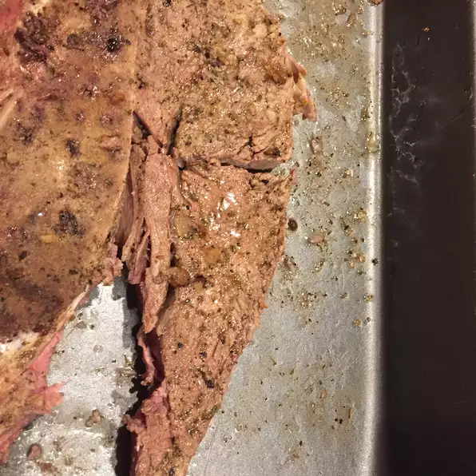

Beer Steak

Description
This is a very simple grilled steak with a simple beer marinade!
Ingredients
- 4 (1/2 pound) rib-eye steaks, or steak of choice.
- 2 tablespoons sea salt.
- 2 tablespoons lemon pepper
- 2 (12 fluid ounce) cans or bottles beer of choice.
Instructions
Step 1
- Place the steaks in a large, shallow container with a lid.
Season each side of the steaks with the salt and lemon pepper.
Gently pour the beer over the steaks (making sure the seasoning doesn't
wash off). Cover, and refrigerate for 1 to 2 hours.
Step 2
- Preheat grill for high heat.
Step 3
- Lightly oil grill grate. Place steaks on grill, and discard beer marinade.
Cook for 5 minutes per side, or to desired doneness.
Step 4
- ...Enjoy!